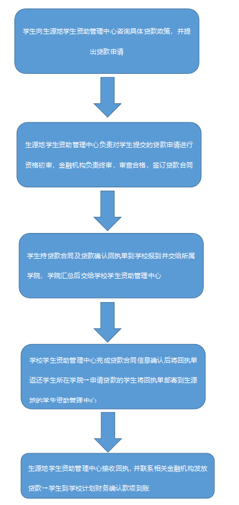

生源地贷款
事项编号：1165
| 办理方式 | 线下办理 | 事项性质 | 服务事项 |
| 办理途径 | 线下 | 办理时间 | 报送时间截止前 |
| 咨询电话 | 028-84078912 | 监督电话 | 暂无 |
1.学生向生源地学生资助管理中心咨询具体贷款政策，并提出贷款申请→生源地学生资助管理中心负责对学生提交的贷款申请进行资格初审，金融机构负责终审，审查合格，签订贷款合同→学生持贷款合同及贷款确认回执单到学校报到并交给所属学院，学院汇总后交给学校学生资助管理中心→学校学生资助管理中心完成贷款合同信息确认后将回执单返还学生所在学院→申请贷款的学生将回执单邮寄到生源地的学生资助管理中心→生源地学生资助管理中心接收回执，并联系相关金融机构发放贷款→学生到学校计划财务确认款项到账

暂无其他说明
- 服务人群：
- 研究生,学校管理员,教师,兼职教师,学生
- 所属部门：
- 党委学生工作部、学生工作处、学生资助管理中心（副处级）
- 服务日期：
- 长期有效
办理入口
生源地贷款